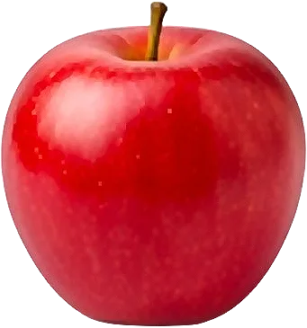

Pomme

Fruit le plus consommé en France ; les variétés tardives se gardent tout l’hiver.
- Saison : janvier, février, mars, avril, août, septembre, octobre, novembre, décembre
- Pleine saison : septembre, octobre, novembre
- Famille botanique : Rosacées
Histoire
La pomme cultivée descend d’un pommier sauvage des montagnes du Kazakhstan, diffusé le long de la route de la soie. Les Grecs et les Romains développent le greffage, et les monastères médiévaux multiplient les variétés. Elle est aujourd’hui le fruit le plus consommé en France.
Origine et régions de production
La France est l’un des premiers producteurs européens de pommes :
- Val de Loire
- Provence-Alpes-Côte d’Azur
- Nouvelle-Aquitaine
- Normandie
La pomme du Limousin bénéficie d’une AOP, et les pommes des Alpes de Haute-Durance d’une IGP.
Bienfaits
La pomme mérite sa réputation de fruit santé :
- Fibres (pectine) : Elle favorise la satiété et le bon transit.
- Polyphénols : Concentrés dans la peau : mieux vaut la croquer entière.
- Énergie modérée : Environ 52 kcal/100 g.
- Vitamine C : Surtout dans les variétés acidulées.
Variétés
- Golden : Jaune et sucrée, la plus cultivée en France.
- Granny Smith : Verte, acidulée et croquante.
- Gala : Rayée de rouge, douce.
- Pink Lady : Rose, sucrée-acidulée.
- Reinette grise du Canada : Peau rugueuse, parfaite en tarte.
Conserver sans gaspiller
- Conservation : Au frais et au sec, ou au frigo : plusieurs semaines. Loin des autres fruits, qu’elle fait mûrir.
- Congélation : En compote ou en quartiers citronnés : jusqu’à 12 mois.
- Rien ne se jette : Les épluchures et les trognons font une gelée ou du vinaigre de cidre. Les pommes abîmées font la meilleure compote.